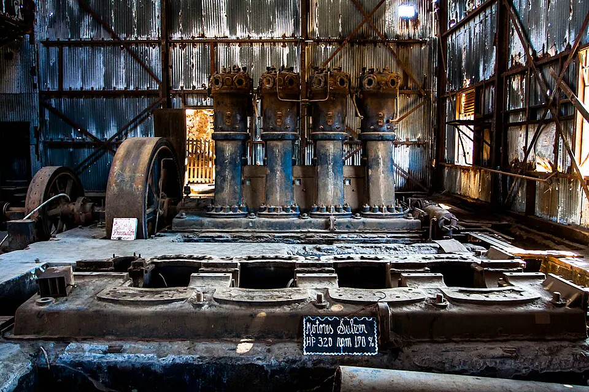

La época del salitre

Tras la Guerra del Pacífico, Chile incorporó las zonas salitreras de Tarapacá y Antofagasta y se convirtió en el principal productor mundial de nitrato natural, demandado como fertilizante y para fabricar explosivos. Gran parte de la industria quedó en manos de capitales británicos, como los de John Thomas North, conocido como el "rey del salitre", aunque también hubo empresarios chilenos.
El Estado no explotó directamente el salitre, pero cobró un impuesto a su exportación que se transformó en su principal fuente de ingresos. Con esos recursos financió ferrocarriles, puertos, edificios públicos, escuelas y una administración en expansión.
En la pampa surgieron las oficinas salitreras, donde vivían trabajadores llegados del centro y sur de Chile, de Perú y de Bolivia. Las condiciones eran duras: largas jornadas, accidentes, pago en fichas que solo servían en la pulpería de la empresa y viviendas precarias. Allí nació una fuerte cultura obrera y sindical, ligada a La cuestión social.
La Primera Guerra Mundial y el desarrollo del salitre sintético en Alemania, seguidos por la crisis de 1929, provocaron el derrumbe de la industria. La dependencia de un solo producto de exportación es un tema central en el debate sobre el desarrollo económico chileno.
Versión para niños
En el Desierto de Atacama hay salitre, un mineral que en todo el mundo se usaba como abono para que los cultivos crecieran mejor. Después de la Guerra del Pacífico, Chile se convirtió en el gran productor de salitre. Miles de trabajadores, llamados pampinos, llegaron con sus familias a vivir en las oficinas salitreras, pueblos en medio del desierto. Era un trabajo muy duro. Con los años se inventó un salitre artificial, y muchas oficinas cerraron y quedaron vacías.
Para maestros
Nivel sugerido: 1° medio
Objetivo: Analizar el ciclo del salitre y sus efectos económicos, sociales y culturales en Chile. Las fechas (c. 1880–1930) son aproximadas porque se trata de un proceso: van desde la incorporación de Tarapacá y Antofagasta hasta la crisis de 1929–1930, y el año 1895 se usa solo como referencia del auge.
Preguntas para la clase:
- ¿Por qué se dice que Chile dependía del salitre?
- ¿Cómo era la vida cotidiana de una familia pampina?
- ¿Qué lecciones deja el ciclo del salitre para una economía que hoy depende en gran parte del cobre?
Actividad (20–30 min): Los estudiantes analizan fotografías de oficinas salitreras y de fichas de pago. En grupos elaboran un afiche que explique cómo funcionaba una oficina, quiénes trabajaban en ella y qué derechos laborales faltaban.
Fuentes sugeridas: Memoria Chilena; Biblioteca Nacional Digital; Museo Histórico Nacional; Corporación Museo del Salitre (Humberstone y Santa Laura).
Objetivos de Aprendizaje (Currículum Nacional)
- 6° básico · HI06 OA 06 Caracterizar los principales aspectos que definieron el período de riqueza aportada por la explotación del salitre … el inicio de la "cuestión social"
- 1° medio · HI1M OA 10 Explicar que Chile durante el siglo XIX se insertó … en los mercados internacionales mediante la explotación y exportación de recursos naturales
- 1° medio · HI1M OA 17 Caracterizar las principales transformaciones generadas por las riquezas del salitre, reconociendo el crecimiento del ingreso fiscal
Revisión humana pendiente. Cómo se revisa · Reportar un error
Cómo citar: Historia de Chile. (2026). La época del salitre. En Historia de Chile: atlas y línea de tiempo. https://moises-salgado.github.io/historia-de-chile/momento/la-epoca-del-salitre.html